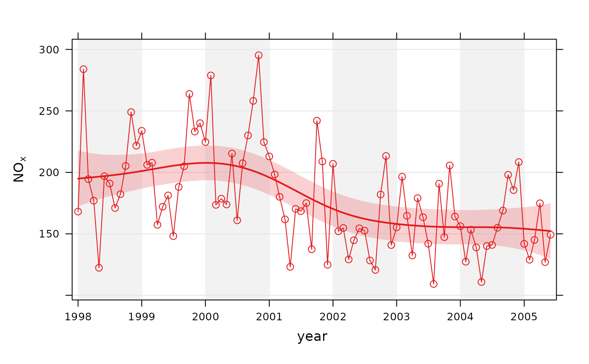

Use non-parametric methods to calculate time series trends
Usage
smoothTrend(
mydata,
pollutant = "nox",
deseason = FALSE,
type = "default",
statistic = "mean",
avg.time = "month",
percentile = NA,
data.thresh = 0,
simulate = FALSE,
n = 200,
autocor = FALSE,
cols = "brewer1",
shade = "grey95",
xlab = "year",
y.relation = "same",
ref.x = NULL,
ref.y = NULL,
key.columns = length(percentile),
name.pol = pollutant,
ci = TRUE,
alpha = 0.2,
date.breaks = 7,
auto.text = TRUE,
k = NULL,
plot = TRUE,
...
)Arguments
- mydata
A data frame containing the field
dateand at least one other parameter for which a trend test is required; typically (but not necessarily) a pollutant.- pollutant
The parameter for which a trend test is required. Mandatory.
- deseason
Should the data be de-deasonalized first? If
TRUEthe functionstlis used (seasonal trend decomposition using loess). Note that ifTRUEmissing data are first imputed using a Kalman filter and Kalman smooth.- type
typedetermines how the data are split i.e. conditioned, and then plotted. The default is will produce a single plot using the entire data. Type can be one of the built-in types as detailed incutDatae.g. “season”, “year”, “weekday” and so on. For example,type = "season"will produce four plots — one for each season.It is also possible to choose
typeas another variable in the data frame. If that variable is numeric, then the data will be split into four quantiles (if possible) and labelled accordingly. If type is an existing character or factor variable, then those categories/levels will be used directly. This offers great flexibility for understanding the variation of different variables and how they depend on one another.Type can be up length two e.g.
type = c("season", "weekday")will produce a 2x2 plot split by season and day of the week. Note, when two types are provided the first forms the columns and the second the rows.- statistic
Statistic used for calculating monthly values. Default is “mean”, but can also be “percentile”. See
timeAveragefor more details.- avg.time
Can be “month” (the default), “season” or “year”. Determines the time over which data should be averaged. Note that for “year”, six or more years are required. For “season” the data are plit up into spring: March, April, May etc. Note that December is considered as belonging to winter of the following year.
- percentile
Percentile value(s) to use if
statistic = "percentile"is chosen. Can be a vector of numbers e.g.percentile = c(5, 50, 95)will plot the 5th, 50th and 95th percentile values together on the same plot.- data.thresh
The data capture threshold to use (%) when aggregating the data using
avg.time. A value of zero means that all available data will be used in a particular period regardless if of the number of values available. Conversely, a value of 100 will mean that all data will need to be present for the average to be calculated, else it is recorded asNA. Not used ifavg.time = "default".- simulate
Should simulations be carried out to determine the Mann-Kendall tau and p-value. The default is
FALSE. IfTRUE, bootstrap simulations are undertaken, which also account for autocorrelation.- n
Number of bootstrap simulations if
simulate = TRUE.- autocor
Should autocorrelation be considered in the trend uncertainty estimates? The default is
FALSE. Generally, accounting for autocorrelation increases the uncertainty of the trend estimate sometimes by a large amount.- cols
Colours to use. Can be a vector of colours e.g.
cols = c("black", "green")or pre-defined openair colours — seeopenColoursfor more details.- shade
The colour used for marking alternate years. Use “white” or “transparent” to remove shading.
- xlab
x-axis label, by default “year”.
- y.relation
This determines how the y-axis scale is plotted. "same" ensures all panels use the same scale and "free" will use panel-specific scales. The latter is a useful setting when plotting data with very different values. ref.x See
ref.yfor details. In this case the correct date format should be used for a vertical line e.g.ref.x = list(v = as.POSIXct("2000-06-15"), lty = 5).- ref.x
See
ref.y.- ref.y
A list with details of the horizontal lines to be added representing reference line(s). For example,
ref.y = list(h = 50, lty = 5)will add a dashed horizontal line at 50. Several lines can be plotted e.g.ref.y = list(h = c(50, 100), lty = c(1, 5), col = c("green", "blue")). Seepanel.ablinein thelatticepackage for more details on adding/controlling lines.- key.columns
Number of columns used if a key is drawn when using the option
statistic = "percentile".- name.pol
Names to be given to the pollutant(s). This is useful if you want to give a fuller description of the variables, maybe also including subscripts etc.
- ci
Should confidence intervals be plotted? The default is
FALSE.- alpha
The alpha transparency of shaded confidence intervals - if plotted. A value of 0 is fully transparent and 1 is fully opaque.
- date.breaks
Number of major x-axis intervals to use. The function will try and choose a sensible number of dates/times as well as formatting the date/time appropriately to the range being considered. This does not always work as desired automatically. The user can therefore increase or decrease the number of intervals by adjusting the value of
date.breaksup or down.- auto.text
Either
TRUE(default) orFALSE. IfTRUEtitles and axis labels will automatically try and format pollutant names and units properly e.g. by subscripting the ‘2’ in NO2.- k
This is the smoothing parameter used by the
gamfunction in packagemgcv. By default it is not used and the amount of smoothing is optimised automatically. However, sometimes it is useful to set the smoothing amount manually usingk.- plot
Should a plot be produced?
FALSEcan be useful when analysing data to extract plot components and plotting them in other ways.- ...
Other graphical parameters are passed onto
cutDataandlattice:xyplot. For example,smoothTrendpasses the optionhemisphere = "southern"on tocutDatato provide southern (rather than default northern) hemisphere handling oftype = "season". Similarly, common graphical arguments, such asxlimandylimfor plotting ranges andpchandcexfor plot symbol type and size, are passed onxyplot, although some local modifications may be applied by openair. For example, axis and title labelling options (such asxlab,ylabandmain) are passed toxyplotviaquickTextto handle routine formatting. One special case here is that many graphical parameters can be vectors when used withstatistic = "percentile"and a vector ofpercentilevalues, see examples below.
Value
an openair object
Details
The smoothTrend function provides a flexible way of estimating the
trend in the concentration of a pollutant or other variable. Monthly mean
values are calculated from an hourly (or higher resolution) or daily time
series. There is the option to deseasonalise the data if there is evidence
of a seasonal cycle.
smoothTrend uses a Generalized Additive Model (GAM) from the
gam package to find the most appropriate level of smoothing.
The function is particularly suited to situations where trends are not
monotonic (see discussion with TheilSen() for more details on
this). The smoothTrend function is particularly useful as an
exploratory technique e.g. to check how linear or non-linear trends are.
95% confidence intervals are shown by shading. Bootstrap estimates of the
confidence intervals are also available through the simulate option.
Residual resampling is used.
Trends can be considered in a very wide range of ways, controlled by setting
type - see examples below.
See also
Other time series and trend functions:
TheilSen(),
calendarPlot(),
runRegression(),
timePlot(),
timeProp(),
timeVariation(),
trendLevel()
Examples
# trend plot for nox
smoothTrend(mydata, pollutant = "nox")

# trend plot by each of 8 wind sectors
if (FALSE) smoothTrend(mydata, pollutant = "o3", type = "wd", ylab = "o3 (ppb)") # \dontrun{}
# several pollutants, no plotting symbol
if (FALSE) smoothTrend(mydata, pollutant = c("no2", "o3", "pm10", "pm25"), pch = NA) # \dontrun{}
# percentiles
if (FALSE) smoothTrend(mydata, pollutant = "o3", statistic = "percentile",
percentile = 95) # \dontrun{}
# several percentiles with control over lines used
if (FALSE) smoothTrend(mydata, pollutant = "o3", statistic = "percentile",
percentile = c(5, 50, 95), lwd = c(1, 2, 1), lty = c(5, 1, 5)) # \dontrun{}